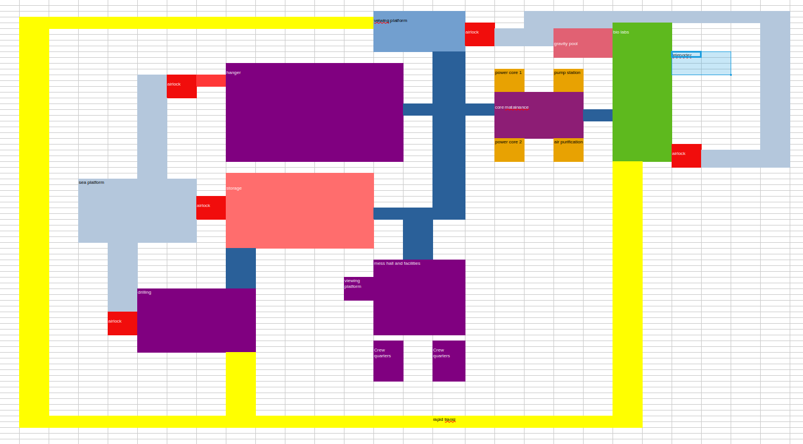
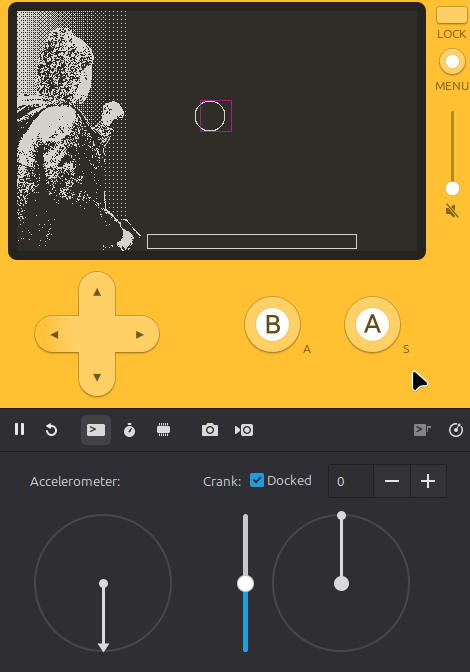
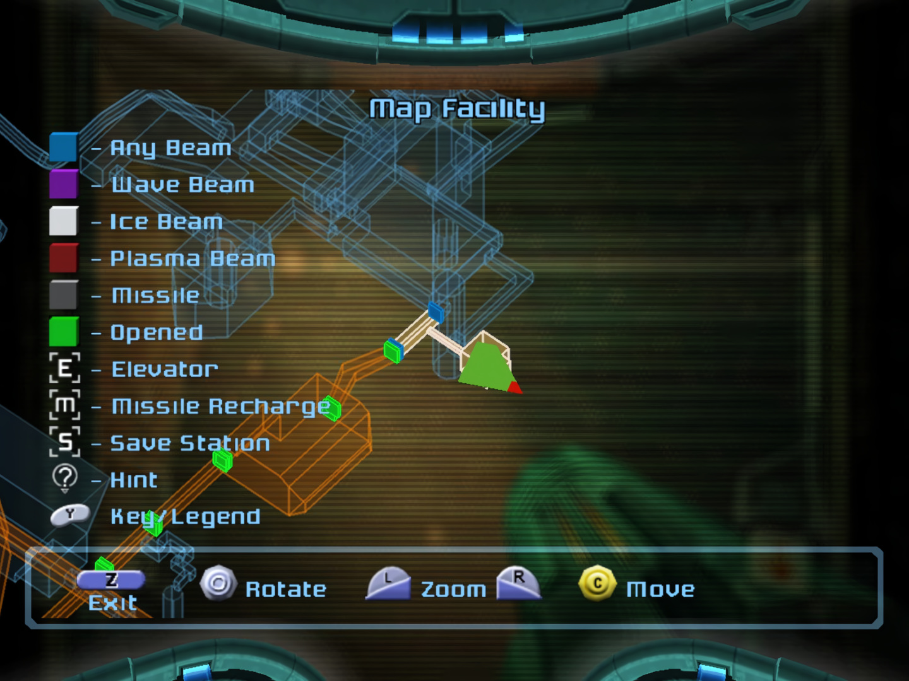
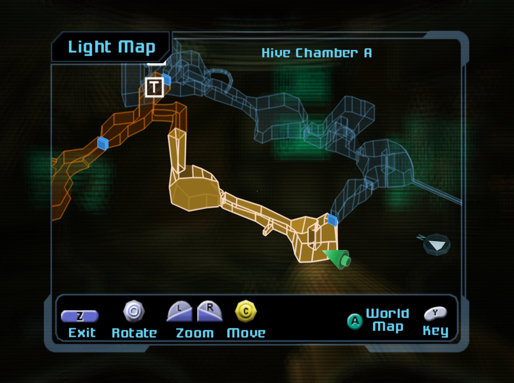

For this project I want to make a survival horror style game for the Playdate console. I will be loosely theming this game to a previous project I’ve worked on called Trapped in the deep. The story will see players waking up in an underwater laboratory trying to escape by solving puzzles, unlocking areas and fighting strange monsters. As for the scope of the project: I want to build a small 2-3 hour experience consisting of 2D exploration (similar to the Pokemon games), 3rd person shooting-gallery style combat and bespoke object interactions.
the structure of the game will be that of a metroidvania, players will traverse areas of the lab multiple times, slowly expanding the exorable aria, as they unlock doors with keys and passwords.
During exploration segments players will roam an environment build in pulp, once this is complete this will be converted to lua. Items found in this “overworld” will affect 3rd person shooting moments being the main source of ammo and health regeneration.

A loose facility map mocked up in excel allows me to map where items will be placed in the game world, thus planning progression.
Combat will consist of 4 layers of content (displayed in order of rendering):
- environments: pre-rendered in blender
- enemies: pre-rendered in blender
- player character: filmed footage of myself or an actor.
- UI assets: battery charge, health and ammo
The game-play of combat will utilise darkness and light from a players torch. Players will use the crank of the Playdate to charge the battery, this battery will dissipate over time, thus illuminating the environment less and less. Charging can not be done when reloading your weapon, aiming can not be done when charging the battery. Aiming uses the d-pad and the cursor is represented by the light of the flashlight as inspired by the Alan wake franchise.
Above is a proof of consept for consept for the combat sequence featuring cursor movement, lighting and batery charging via the crank.

For the map I want to emulate the look of the maps in the metroid prime games. This wireframe low-poly model should be possible on Playdate hardware as other Playdate games like orrery and chaos engine feature low definition 3d effects. I intend to use a 3D to 2D projection method as described in this video to calculate the on-screen positions on the vertices and utilise the Playdate draw line function to connect them together.

Map from Metroid Prime
Map from Metroid Prime 2: Echos My custom 3D wierframe Renderer for Playdate. see more details in upcoming DevLog
My custom 3D wierframe Renderer for Playdate. see more details in upcoming DevLog
The game is supposed to be set in a underwater laboratory. Design should aim to feel claustrophobic and industrial. The design of the setting should take inspiration from real world examples of submarines, space stations, and oil rigs as well as fictional environments from franchises like: alien, the abyss, lone echo, soma and dead space. Uniforms should take similar inspiration: the main character should be waiting simple practical clothing such as coveralls.
 Above is a moodboard for reference and inspiration for the world and main character, for details for adapting art for the playdate check out the first Dev Log.
Above is a moodboard for reference and inspiration for the world and main character, for details for adapting art for the playdate check out the first Dev Log.
The game will potentially feature pre-rendered cut-scenes for both story beats, new environments unlocking and transitions between arias. For length and level of detail look to metroid zero mission as a guide for detail.
Powered by w3.css